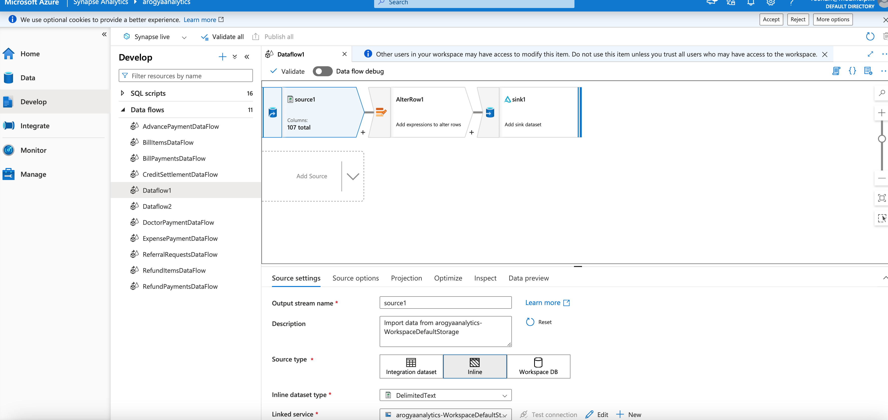
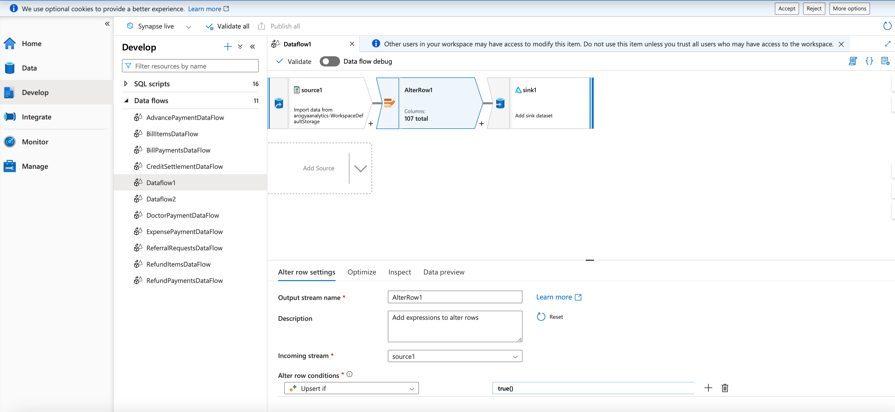
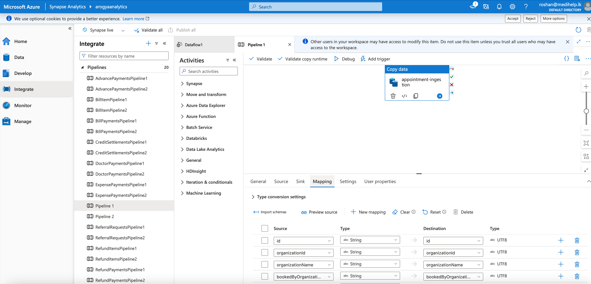
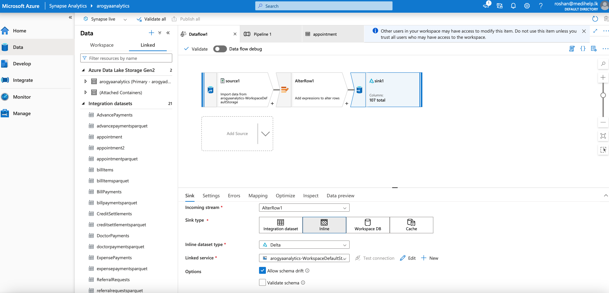
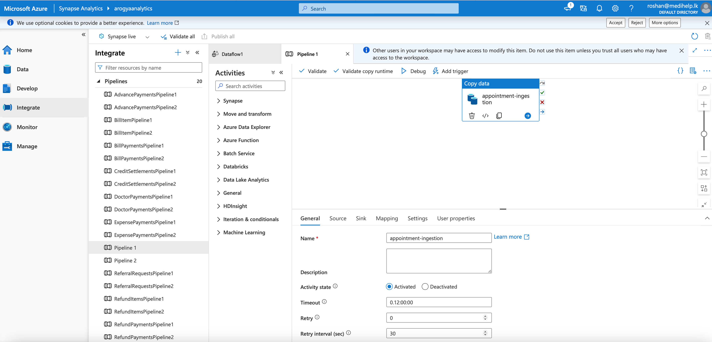

In today's data-driven world, organizations need efficient ways to handle large volumes of data while ensuring data integrity and enabling fast analytics. Delta Lake, an open-source storage layer, provides ACID transactions, scalable metadata handling, and time travel capabilities on top of existing data lakes. This blog post walks through creating a Delta Lake implementation using Azure Synapse Analytics.
Delta Lake is an open-source storage layer that brings reliability to data lakes. Delta Lake provides ACID transactions, scalable metadata handling, and unifies streaming and batch data processing. Delta Lake runs on top of your existing data lake and is compatible with Apache Spark APIs.
Our implementation follows this data flow:
First, we establish our storage foundation with proper folder organization:
This organization helps maintain a clean separation between raw data and processed data.
Azure Synapse Analytics provides an integrated environment for our data processing needs:

The workspace serves as the central hub where we'll design and orchestrate our data flows and pipelines.
In the Synapse Studio, we create a data flow to define our data transformation logic:

The data flow consists of these key components:
The source is configured to read from our input folder, using wildcards to capture all relevant files. As shown in the screenshot, we're importing data from the arogyaanalytics-WorkspaceDefaultStorage location.

Here we define how our input columns map to the target schema, ensuring data types are correctly aligned.

The sink configuration is crucial for proper Delta Lake implementation:
This configuration ensures our data is written in the proper Delta format with optimized performance characteristics.

The pipeline orchestrates the execution of our data flow:
This pipeline provides the execution context for our data processing logic, bringing the components together into a cohesive workflow.
To make our Delta Lake data accessible for analytics, we create an external table:
This step exposes our Delta Lake through SQL interfaces, enabling analytics queries against the processed data.
For security and governance, we create a specific user and assign them to the Azure Data Lake Storage Gen2 access control group.
This ensures that only authorized personnel can access and work with our Delta Lake data.
Let's summarize how our pipeline processes data end-to-end:
The pipeline begins by reading CSV files from the designated input folder in our storage account. These files contain the raw appointment/session data with timestamps.
As part of the data flow processing, the CSV data is converted to Parquet format. This conversion brings several advantages:
The most critical step transforms the Parquet data into a proper Delta Lake by:
The resulting Delta Lake provides these key benefits:
By implementing a Delta Lake in Azure Synapse Analytics, we've created a robust solution for data storage and processing that combines the scalability of data lakes with the reliability of traditional databases.
This implementation provides a foundation for advanced analytics, supporting both batch and streaming workloads with consistent performance and data integrity.
Ready to implement your own Delta Lake solution? Follow the steps outlined in this guide to get started with your Azure Synapse Analytics environment today.